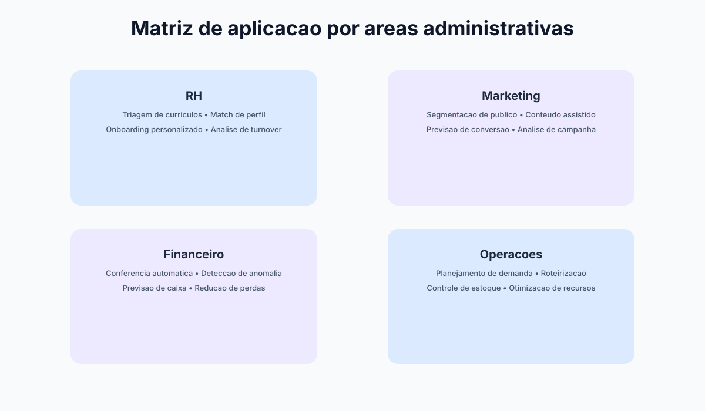
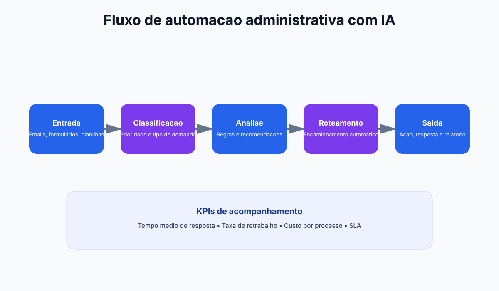
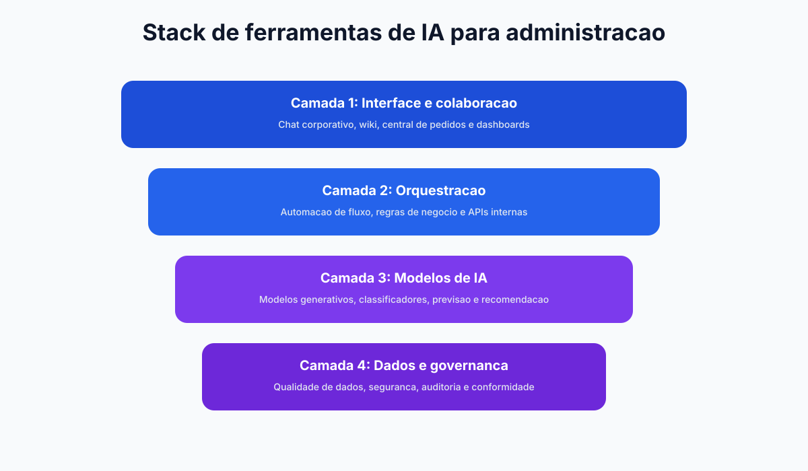

Integração de áreas
Conecte RH, Marketing, Finanças e Operações.
Módulo 3
RH, Marketing, Financeiro e Operações já utilizam IA para acelerar tarefas e elevar precisão. O segredo é adaptar cada aplicação à realidade de cada área.
Por que esta imagem? Ela reforça a visão interáreas do módulo, onde resultados surgem quando departamentos conectam decisões e dados.
Conecte RH, Marketing, Finanças e Operações.
Escolha casos por impacto e viabilidade.
Escala progressiva com aprendizado contínuo.



Triagem inteligente de currículos, análise de fit para vagas e apoio na construção de trilhas de desenvolvimento.
Geração de campanhas, segmentação de público e análise de performance em tempo real com ajustes mais rápidos.
Previsão de fluxo de caixa, detecção de inconsistências e conciliações com menos intervenção manual.
Planejamento de demanda, gestão de estoque e roteirização inteligente para manter eficiência operacional.
Sistema didático do módulo
Resumo
O melhor caso de uso é aquele que combina impacto econômico, prontidão de dados e baixa fricção de implantação.
Exemplo real
RH e Marketing costumam ter ganhos rápidos; Financeiro e Operações entram em seguida com desenho mais robusto de dados.
Prompt pronto
Monte roteiro de 30 dias por área com KPI próprio para evitar comparação injusta entre contextos diferentes.
Atenção
Escalar para áreas sem dono local e sem baseline cria ruído e enfraquece a confiança na iniciativa.
| Área | Caso de uso recomendado | Impacto esperado | Dificuldade de implementação |
|---|---|---|---|
| RH | Triagem de currículos e ranqueamento inicial | Alto | Baixa |
| Marketing | Geração de variações de campanha por persona | Alto | Baixa a média |
| Financeiro | Classificação automática de despesas e alertas | Médio a alto | Média |
| Operações | Previsão de demanda com histórico sazonal | Alto | Média a alta |
Em empresas reais, áreas disputam prioridade de investimento. A melhor forma de evitar conflito é adotar uma régua comum de decisão com três eixos: impacto econômico, prontidão de dados e facilidade de implantação.
Quanto o caso reduz custo, aumenta receita ou melhora nível de serviço em horizonte de 90 dias.
Qualidade, disponibilidade e confiabilidade das bases necessárias para treinar ou operar o modelo.
Dependência de sistemas, mudança de rotina, risco regulatório e capacidade do time para executar o piloto.
Prompt para plano tático por área
Você é um consultor executivo de IA. Monte um plano tático para implementar IA na área de [RH/Marketing/Financeiro/Operações] em 30 dias. Inclua: - 3 casos de uso priorizados - Ferramenta recomendada por caso - KPI de acompanhamento - Principais riscos - Cronograma semanal
Uma rede de clínicas integrou IA em quatro áreas simultaneamente. Em 90 dias obteve ganhos combinados:
Nesta etapa, você aprofunda aplicações setoriais e estrutura um plano completo por área administrativa.
Triagem, onboarding inteligente e analytics de desempenho.
Carga: 3h
Segmentação, conteúdo e otimização de funil com IA.
Carga: 3h
Conciliação, previsão e detecção de inconsistências.
Carga: 3h
Previsão de demanda, priorização e redução de desperdício.
Carga: 3h
Aplicacao pratica para transformar teoria de Modulo 3 em ganho operacional mensuravel.
Mapeie o fluxo atual de priorizacao interareas de casos e identifique gargalos de tempo, custo e retrabalho.
Evidencia: mapa AS-IS com 3 gargalos priorizados.
Desenhe um piloto de 2 semanas para aplicacao por areas administrativas, com escopo controlado e checkpoints diarios.
Evidencia: plano de execucao com dono, prazo e criterio de parada.
Defina baseline e metas para ganho por area funcional, comparando antes vs depois com o mesmo periodo.
Evidencia: painel simples com 3 KPIs e tendencia semanal.
Implemente regras de revisao humana, classificacao de dados e trilha de auditoria das decisoes.
Evidencia: checklist de risco com responsaveis e frequencia de revisao.
Planeje extensao para um segundo processo mantendo qualidade, custo sob controle e aprendizagem da equipe.
Evidencia: roadmap 30-60-90 dias com marco de escala.
Prompts curados para acelerar analise, decisao e implantacao com foco em Modulo 3.
Prompt 1: Diagnostico executivo
Atue como consultor de aplicacao por areas administrativas. Faça um diagnostico rapido do processo [priorizacao interareas de casos] com 5 gargalos, impacto estimado e prioridade de ataque.
Prompt 2: Plano 30-60-90
Monte um plano 30-60-90 dias para implementar IA em [priorizacao interareas de casos] incluindo objetivos, entregas por fase, donos e riscos.
Prompt 3: KPIs e baseline
Defina um modelo de medicao para [ganho por area funcional] com baseline, meta trimestral, formula e frequencia de acompanhamento.
Prompt 4: Governanca minima
Crie uma politica minima de uso de IA para este contexto com regras de dados, revisao humana, aprovacao e auditoria.
Prompt 5: Escala com controle
Proponha como escalar o piloto para outra area sem perder qualidade, informando criterios de readiness e plano de capacitacao.
Use os prompts abaixo adaptados para RH, Marketing, Financeiro e Operações.
Prompt: Mapear oportunidades de IA por área (RH, Marketing, Financeiro, Operações)
Para cada área abaixo, liste 3 oportunidades de IA baseadas em desafios REAIS que você enfrenta: RECURSOS HUMANOS: - Maior desafio hoje: [descrever] - Métrica mais crítica: [o que mais importa?] - Oportunidade 1: [solução com IA] - Oportunidade 2: [solução com IA] - Oportunidade 3: [solução com IA] MARKETING: - Maior desafio hoje: [descrever] - Métrica mais crítica: [o que mais importa?] - Oportunidade 1: [solução com IA] - Oportunidade 2: [solução com IA] - Oportunidade 3: [solução com IA] FINANCEIRO: - Maior desafio hoje: [descrever] - Métrica mais crítica: [o que mais importa?] - Oportunidade 1: [solução com IA] - Oportunidade 2: [solução com IA] - Oportunidade 3: [solução com IA] OPERAÇÕES: - Maior desafio hoje: [descrever] - Métrica mais crítica: [o que mais importa?] - Oportunidade 1: [solução com IA] - Oportunidade 2: [solução com IA] - Oportunidade 3: [solução com IA] Para cada um, recomende: tipo de IA, tempo de implementação, risco principal.
Prompt: Qual área começar primeiro (RH, Marketing, Financeiro ou Operações)
Tenho aprovação para começar em 1 área apenas. Qual deveria escolher PRIMEIRA para máximo sucesso? Considere: 1. Qual tem maior ganho potencial (horas/R$)? 2. Qual tem processo mais estruturado? 3. Qual tem dados melhores organizados? 4. Qual área seria mais receptiva? 5. Qual sucesso abre porta para outras? Recomendação: qual é a 2ª área após sucesso? Por quê?
Prompt: Estruturar piloto multi-área em paralelo
Vou testar IA em 2 áreas em paralelo. Monte um plano para 60 dias: PARA CADA ÁREA: 1. Qual processo específico será piloto? 2. Qual métrica semanal vou monitorar? 3. Quem é o patrocinador/dono? 4. Qual é a "regra de parada" (quando cancelo)? 5. Como comunicar para equipe (minimizar resistência)? GOVERNANÇA: - Como sincronizar aprendizado entre áreas? - Se 1 falhar, qual é plano B? - Qual sera o ponto de decisão (semana 4, 8 ou 12)?